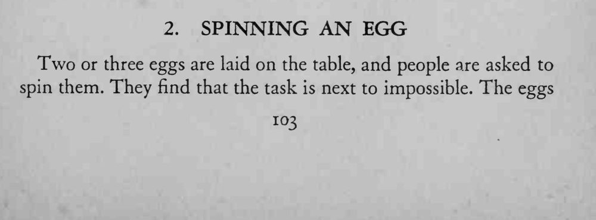
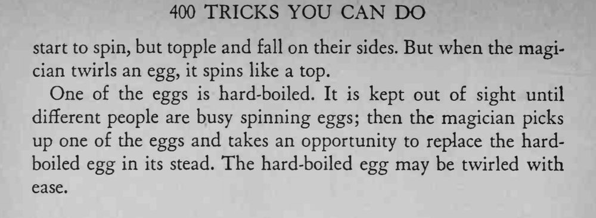

观众怎么转鸡蛋都转不稳，魔术师拿起一枚轻轻一旋，鸡蛋就像陀螺一样转个不停。
熟鸡蛋内部是固体，才能稳定旋转；换蛋的动作要自然，别让人看到你换了一枚。


Two or three eggs are laid on the table, and people are asked to spin them. They find that the task is next to impossible. The eggs start to spin, but topple and fall on their sides. But when the magician twirls an egg, it spins like a top. One of the eggs is hard-boiled. It is kept out of sight until different people are busy spinning eggs; then the magician picks up one of the eggs and takes an opportunity to replace the hardboiled egg in its stead. The hard-boiled egg may be twirled with ease.